Как загрузить компьютер с CD или USB-накопителя. Загружаемся в чистую ОС с Lubuntu Linux Live USB(CD)
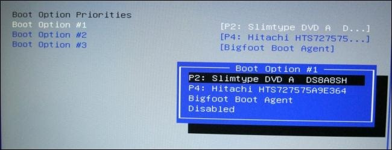.
Обычно вы загружаете свой компьютер с основного жесткого диска, который содержит вашу операционную систему (например, Windows). В данном случае нам понадобиться загрузиться с (CD)DVD-диска или USB-диска, для того чтобы попасть в безопасную ОС для манипуляции Вашими криптовалютными кошельками.
Чтобы сделать это, вам нужно сообщить BIOS вашего компьютера, что загрузить операционную систему нужно из другого места, а не как обычно. Вы можете сделать это двумя способами: изменив порядок загрузки в прошивке BIOS или UEFI (чтобы ПК каждый раз пытался загрузиться с компакт-диска или USB-устройства) или путем доступа к меню загрузки при запуске. Мы покажем вам оба метода в этом руководстве. Первый является постоянным, пока вы не измените настройки BIOS или UEFI, и должен подходить для большиинства компьютеров. Второй метод выполняется быстрее, но может быть недоступным на вашей машине.
ПРИМЕЧАНИЕ. Этот процесс будет выглядеть по-разному на каждом компьютере. Инструкции здесь помогут вам в этом процессе, но скриншоты не будут отличаться.
Как изменить порядок загрузки вашего компьютера
В зависимости от того, насколько новый ваш компьютер, порядок загрузки контролируется в BIOS или UEFI вашего компьютера.
Чтобы получить доступ к BIOS, вам необходимо перезагрузить компьютер и нажать нужную клавишу в начале процесса загрузки. Эта клавиша обычно отображается на экране во время процесса загрузки. Например, вы можете увидеть сообщение с надписью «Press <"DEL"> to enter setup», или «Press F2 to access the BIOS». Нажмите нужную клавишу в начале процесса загрузки, и появится BIOS вашего компьютера.
Хотя Delete и F2, являются наиболее распространенными клавишами для доступа в BIOS, вашему компьютеру может потребоваться другое сочетнание клавиш, например F1, Escape или Ctrl + Alt + Escape. Если вы не видите требуемый ключ на экране, обратитесь к руководству вашего компьютера или поищите имя модели компьютера и «ключ BIOS» в Google. (Если вы собрали свой собственный компьютер из комплектующих, обратитесь к руководству материнской платы.)
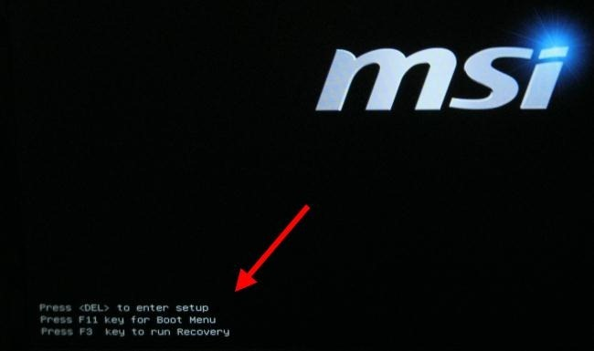.
На ПК с прошивкой UEFI, для новых ПК, поставляемых с Windows 8 или 10, вы не сможете нажать клавишу при загрузке, чтобы получить доступ к меню загрузки. Вместо этого вам сначала нужно будет загрузиться в Windows. Нажмите и удерживайте клавишу «Shift», когда вы нажмете «Перезапустить» в меню «Пуск» или на экране входа. Windows перезагрузится в специальное меню параметров загрузки.
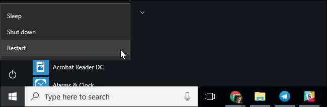.
Нажмите Troubleshoot > Advanced Options > UEFI Firmware Settings для доступа к экрану настроек UEFI вышего компьютера.
Это меню загрузки также будет автоматически отображаться, если на вашем компьютере возникли проблемы с загрузкой стационарной ОС, поэтому вы будете иметь доступ к нему, даже если ваш компьютер не может загрузить Windows.
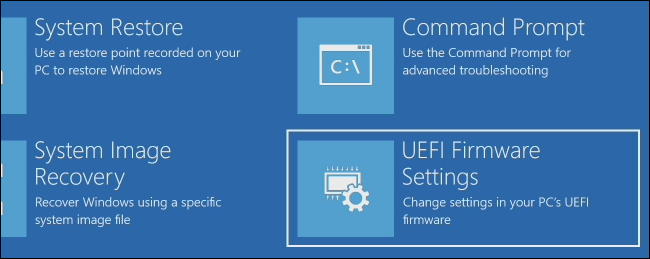.
Когда вы находитесь в меню BIOS или UEFI, найдите вкладку «Boot». Обычно она находится в верхней части экрана. Если сверху нет, эта опция может быть расположена в другой вкладке.
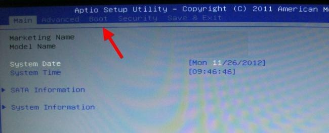.
Используйте клавиши со стрелками для навигации по BIOS. Чтобы выбрать что-то, нажмите Enter. Обычно вы увидите список клавиш, которые вы можете использовать в нижнем правом углу экрана. Некоторые новые компьютеры с прошивкой UEFI могут также поддерживать мышь.
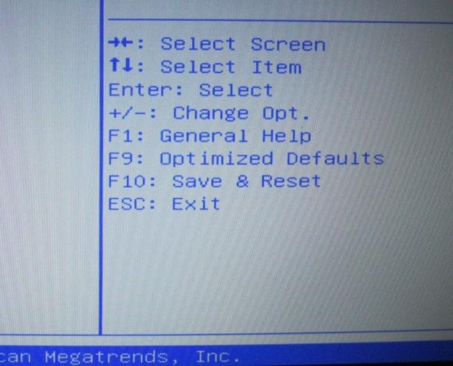.
Найдите экран порядка загрузки, в котором перечислены загрузочные устройства. Это может быть на вкладке «Boot» или ниже параметра «Boot Order option».
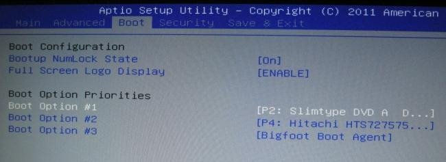.
Выберите параметр и нажмите Enter, чтобы изменить его, чтобы отключить его или указать другое загрузочное устройство. Вы также можете использовать клавиши + и - для перемещения устройств вверх или вниз в списке приоритетов. (Эти шаги могут немного отличаться на некоторых компьютерах, см. Список сочетаний клавиш на экране.)
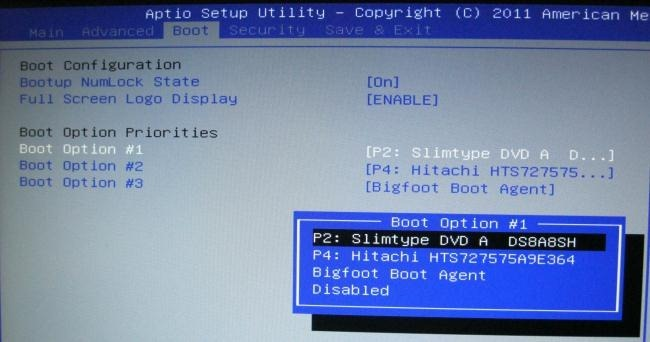.
Обратите внимание, что «USB-накопитель» не отображается в списке , хотя наш компьютер имеет USB-порты. Если мы подключим USB диск с Lubuntu Linux Live USB к компьютеру, прежде чем запускать наш компьютер , мы увидим опцию USB-накопителя в списке. Хотя некоторые компьютеры отображают опцию USB-накопителя, даже если диск не подключен.
Порядок загрузки - это список устройств с которых ПК попробует загрузиться. Например, если «USB-накопитель» находится выше «жесткого диска» в вашем списке загрузки, ваш компьютер попробует загрузиться с USB-накопителя, и если он не подключен или на нем не установлена операционная система, он загрузится с жесткого диска.
Для сохранения настроек перейдите в Save & Exit screen. Выберите “Save Changes and Reset” or “Save Changes and Exit” и нажмите Enter для сохранения настроек и перезагрузки компьютера.
Вы также можете нажать отдельную клавишу, чтобы сохранить настройки и перезагрузить компьютер. Убедитесь, что вы выбрали опцию “save and exit” - это сохраняет, сделанные изменения, а не параметр «discard changes and exit», который отменяет их.
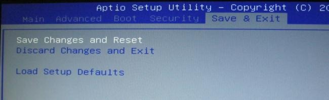.
После перезагрузки компьютера он загрузится с использованием вашего нового порядка на загрузку.
Как получить доступ к меню загрузки вашего компьютера (если оно есть).
Есть более быстрый способ изменения порядка загрузки ПК, он он доступен не для всех моделей компьютеров.
") .
.
Нажмите соответствующую клавишу - часто F11 или F12 - для доступа к меню загрузки во время включения компьютера. Это позволит загрузиться с определенного аппаратного устройства один раз, не изменяя порядок загрузки в BIOS.
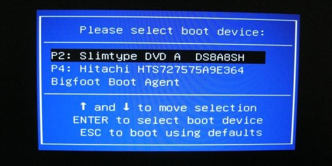.
Для компьютеров на базе UEFI, это большинство ПК, поставляемых с Windows 8 или 10,вы можете выбрать загрузочное устройство из меню дополнительных опций загрузки.
В Windows удерживая клавишу Shift нажмите кнопку «Перезапустить» в меню «Пуск» или на экране входа. ПК перезагрузится в меню параметров загрузки.
Выберите опцию «Use a device» на этом экране, и выберите устройство, с которого хотите загрузиться, например, DVD-диск или USB-накопитель.
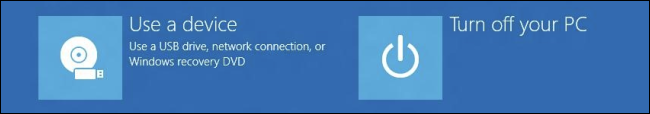.
К сожалению некоторые ПК старшего поколения не поддерживают загрузку c USB накопителей, советуем в данном случае либо сделать Lubuntu Linux Live CD. Либо попробовать загрузиться используя следующую инструкцию .
Защитите вашу конфиденциальность при использовании криптовалют.
Защитите Ваши интернет платежи с помощью Linux Live CD(USB).
Создание Lubuntu Linux Live CD в Windows.
Создание Lubuntu Linux Live USB в Windows.
Проверка целостности дистрибутива Lubuntu Linux Live USB(CD/DVD) в Windows.
Проверка целостности дистрибутива Lubuntu Linux Live USB(CD/DVD) после записи на USB(CD/DVD).
|
|

Home Nagrania Projects |


|